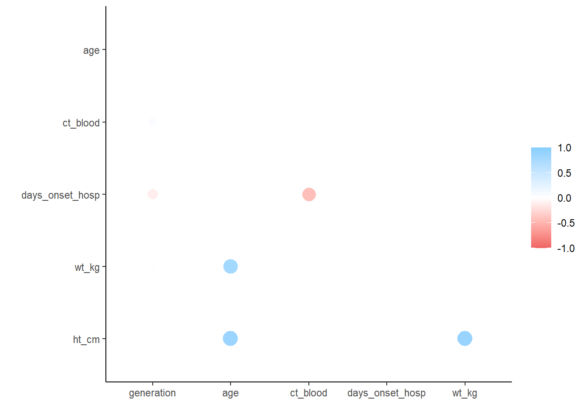

pacman::p_load(
rio, # File import
here, # File locator
skimr, # get overview of data
tidyverse, # data management + ggplot2 graphics,
gtsummary, # summary statistics and tests
rstatix, # statistics
corrr, # correlation analayis for numeric variables
janitor, # adding totals and percents to tables
flextable # converting tables to HTML
)Simple statistical tests
::: callout-tip ## Extended Materials
You can find the original, extended version of this chapter here. ::
This page demonstrates how to conduct simple statistical tests using base R, rstatix, and gtsummary.
- T-test
- Shapiro-Wilk test
- Wilcoxon rank sum test
- Kruskal-Wallis test
- Chi-squared test
- Correlations between numeric variables
…many other tests can be performed, but we showcase just these common ones and link to further documentation.
Each of the above packages bring certain advantages and disadvantages:
- Use base R functions to print a statistical outputs to the R Console
- Use rstatix functions to return results in a data frame, or if you want tests to run by group
- Use gtsummary if you want to quickly print publication-ready tables
An example statistical test
Let’s look a classic example in statistics: flipping a coin to see if it is fair. We flip the coin 100 times and each time record whether it came up heads or tails. So, we have a record that could look something like HHTTHTHTT...
Let’s simulate the experiment in R, using a biased coin:
set.seed(0xdada)
numFlips = 100
probHead = 0.6
# Sample is a function in base R which let's us take a random sample from a vector, with or without replacement.
# This line is sampling numFlips times from the vector ['H','T'] with replacement, with the probabilities for
# each item in the vector being defined in the prob argument as [probHead, 1-probHead]
coinFlips = sample(c("H", "T"), size = numFlips,
replace = TRUE, prob = c(probHead, 1 - probHead))
# Thus, coinFlips is a character vector of a random sequence of 'T' and 'H'.
head(coinFlips)[1] "T" "T" "H" "T" "H" "H"Now, if the coin were fair, we would expect half of the time to get heads. Let’s see.
table(coinFlips)coinFlips
H T
59 41 That is different from 50/50. However, does the data deviates strong enough to conclude that this coin isn’t fair? We know that the total number of heads seen in 100 coin tosses for a fair coin follows \(B(100, 0.5)\), making it a suitable test statistic.
To decide, let’s look at the sampling distribution of our test statistic – the total number of heads seen in 100 coin tosses – for a fair coin. As we learned, we can do this with the binomial distribution. Let’s plot a fair coin and mark our observation with a blue line:
# This line sets k as the vector [0, 1, 2,...,numFlips]
k <- 0:numFlips
# Recall that binary variables (TRUE and FALSE) are interpreted as 1 and 0, so we can use this operation
# to count the number of heads in coinFlips. We practice these kinds of operations in session 3.
numHeads <- sum(coinFlips == "H")
# We use dbinom here to get the probability mass at every integer from 1-numFlips so that we can plot the distribution.
p <- dbinom(k, size = numFlips, prob = 0.5)
# We then convert it into a dataframe for easier plotting.
binomDensity <- data.frame(k = k, p = p)
head(binomDensity) k p
1 0 7.888609e-31
2 1 7.888609e-29
3 2 3.904861e-27
4 3 1.275588e-25
5 4 3.093301e-24
6 5 5.939138e-23# Here, we are plotting the binomial distribution, with a vertical line representing
# the number of heads we actually observed. We will learn how to create plots in session 4.
# Thus, to complete our test we simply need to identify whether or not the blue line
# is in our rejection region.
ggplot(binomDensity) +
geom_bar(aes(x = k, y = p), stat = "identity") +
geom_vline(xintercept = numHeads, col = "blue")
How do we quantify whether the observed value is among those values that we are likely to see from a fair coin, or whether its deviation from the expected value is already large enough for us to conclude with enough confidence that the coin is biased?
We divide the set of all possible \(k(0-100)\) in two complementary subsets, the rejection region and the region of no rejection. We want to make the rejection region as large as possible while keeping their total probability, assuming the null hypothesis, below some threshold \(\alpha\)(say, 0.05).
alpha <- 0.05
# We get the density of our plot in sorted order, meaning that we'll see binomDensity
# jump back and forth between the distribution's tails as p increases.
binomDensity <- binomDensity[order(p),]
# We then manually calculate our rejection region by finding where the cumulative sum in the distribution
# is less than or equal to our chosen alpha level.
binomDensity$reject <- cumsum(binomDensity$p) <= alpha
head(binomDensity) k p reject
1 0 7.888609e-31 TRUE
101 100 7.888609e-31 TRUE
2 1 7.888609e-29 TRUE
100 99 7.888609e-29 TRUE
3 2 3.904861e-27 TRUE
99 98 3.904861e-27 TRUE# Now we recreate the same plot as before, but adding red borders around the parts of our distribution
# in the rejection region.
ggplot(binomDensity) +
geom_bar(aes(x = k, y = p, col = reject), stat = "identity") +
scale_colour_manual(
values = c(`TRUE` = "red", `FALSE` = "darkgrey")) +
geom_vline(xintercept = numHeads, col = "blue") +
theme(legend.position = "none")We sorted the \(p\)-values from lowest to highest (order), and added a column reject by computing the cumulative sum (cumsum) of the \(p\)-values and thresholding it against alpha.
The logical column reject therefore marks with TRUE a set of \(k\)s whose total probability is less than \(\alpha\).
The rejection region is marked in red, containing both very large and very small values of \(k\), which can be considered unlikely under the null hypothesis.
R provides not only functions for the densities (e.g., dbinom) but also for the cumulative distribution functions (pbinom). Those are more precise and faster than cumsum over the probabilities.
The (cumulative) distribution function is defined as the probability that a random variable \(X\) will take a value less than or equal to \(x\).
\[F(x) = P(X \le x)\]
We have just gone through the steps of a binomial test. This is a frequently used test and therefore available in R as a single function.
We have just gone through the steps of a binomial test. In fact, this is such a frequent activity in R that it has been wrapped into a single function, and we can compare its output to our results.
binom.test(x = numHeads, n = numFlips, p = 0.5)
Exact binomial test
data: numHeads and numFlips
number of successes = 59, number of trials = 100, p-value = 0.08863
alternative hypothesis: true probability of success is not equal to 0.5
95 percent confidence interval:
0.4871442 0.6873800
sample estimates:
probability of success
0.59 Hypothesis Tests
We can summarize what we just did with a series of steps:
- Decide on the effect that you are interested in, design a suitable experiment or study, pick a data summary function and test statistic.
- Set up a null hypothesis, which is a simple, computationally tractable model of reality that lets you compute the null distribution, i.e., the possible outcomes of the test statistic and their probabilities under the assumption that the null hypothesis is true.
- Decide on the rejection region, i.e., a subset of possible outcomes whose total probability is small.
- Do the experiment and collect the data; compute the test statistic.
- Make a decision: reject the null hypothesis if the test statistic is in the rejection region.
Types of Error

Having set out the mechanics of testing, we can assess how well we are doing. The following table, called a confusion matrix, compares reality (whether or not the null hypothesis is in fact true) with our decision whether or not to reject the null hypothesis after we have seen the data.
| Test vs reality | Null is true | Null is false |
|---|---|---|
| Reject null | Type I error (false positive) | True postitive |
| Do not reject null | True negative | Type II error (false negative) |
It is always possible to reduce one of the two error types at the cost of increasing the other one. The real challenge is to find an acceptable trade-off between both of them. We can always decrease the false positive rate (FPR) by shifting the threshold to the right. We can become more “conservative”. But this happens at the price of higher false negative rate (FNR). Analogously, we can decrease the FNR by shifting the threshold to the left. But then again, this happens at the price of higher FPR. T he FPR is the same as the probability \(\alpha\) that we mentioned above. \(1-\alpha\) is also called the specificity of a test. The FNR is sometimes also called \(\beta\), and \(1-\beta\) the power, sensitivity or true positive rate of a test. The power of a test can be understood as the likelihood of it “catching” a true positive, or correctly rejecting the null hypothesis.
Generally, there are three factors that can affect statistical power:
- Sample size: Larger samples provide greater statistical power
- Effect size: A given design will always have greater power to find a large effect than a small effect (because finding large effects is easier)
- Type I error rate: There is a relationship between Type I error and power such that (all else being equal) decreasing Type I error will also decrease power.
Preparation
Import data
We import the dataset of cases from a simulated Ebola epidemic. If you want to follow along, click to download the “clean” linelist (as .rds file).
# import the linelist
linelist <- import("linelist_cleaned.rds")base R
You can use base R functions to conduct statistical tests. The commands are relatively simple and results will print to the R Console for simple viewing. However, the outputs are usually lists and so are harder to manipulate if you want to use the results in subsequent operations.
T-tests
A t-test, also called “Student’s t-Test”, is typically used to determine if there is a significant difference between the means of some numeric variable between two groups. Here we’ll show the syntax to do this test depending on whether the columns are in the same data frame.
Syntax 1: This is the syntax when your numeric and categorical columns are in the same data frame. Provide the numeric column on the left side of the equation and the categorical column on the right side. Specify the dataset to data =. Optionally, set paired = TRUE, and conf.level = (0.95 default), and alternative = (either “two.sided”, “less”, or “greater”). Enter ?t.test for more details.
## compare mean age by outcome group with a t-test
t.test(age_years ~ gender, data = linelist)
Welch Two Sample t-test
data: age_years by gender
t = -21.344, df = 4902.3, p-value < 2.2e-16
alternative hypothesis: true difference in means between group f and group m is not equal to 0
95 percent confidence interval:
-7.571920 -6.297975
sample estimates:
mean in group f mean in group m
12.60207 19.53701 Syntax 2: You can compare two separate numeric vectors using this alternative syntax. For example, if the two columns are in different data sets.
t.test(df1$age_years, df2$age_years)You can also use a t-test to determine whether a sample mean is significantly different from some specific value. Here we conduct a one-sample t-test with the known/hypothesized population mean as mu =:
t.test(linelist$age_years, mu = 45)Shapiro-Wilk test
The Shapiro-Wilk test can be used to determine whether a sample came from a normally-distributed population (an assumption of many other tests and analysis, such as the t-test). However, this can only be used on a sample between 3 and 5000 observations. For larger samples a quantile-quantile plot may be helpful.
shapiro.test(linelist$age_years)Wilcoxon rank sum test
The Wilcoxon rank sum test, also called the Mann–Whitney U test, is often used to help determine if two numeric samples are from the same distribution when their populations are not normally distributed or have unequal variance.
## compare age distribution by outcome group with a wilcox test
wilcox.test(age_years ~ outcome, data = linelist)
Wilcoxon rank sum test with continuity correction
data: age_years by outcome
W = 2501868, p-value = 0.8308
alternative hypothesis: true location shift is not equal to 0Kruskal-Wallis test
The Kruskal-Wallis test is an extension of the Wilcoxon rank sum test that can be used to test for differences in the distribution of more than two samples. When only two samples are used it gives identical results to the Wilcoxon rank sum test.
## compare age distribution by outcome group with a kruskal-wallis test
kruskal.test(age_years ~ outcome, linelist)
Kruskal-Wallis rank sum test
data: age_years by outcome
Kruskal-Wallis chi-squared = 0.045675, df = 1, p-value = 0.8308Chi-squared test
Pearson’s Chi-squared test is used in testing for significant differences between categorical croups.
## compare the proportions in each group with a chi-squared test
chisq.test(linelist$gender, linelist$outcome)
Pearson's Chi-squared test with Yates' continuity correction
data: linelist$gender and linelist$outcome
X-squared = 0.0011841, df = 1, p-value = 0.9725Correlations
Correlation between numeric variables can be investigated using the tidyverse
corrr package. It allows you to compute correlations using Pearson, Kendall tau or Spearman rho. The package creates a table and also has a function to automatically plot the values.
correlation_tab <- linelist %>%
select(generation, age, ct_blood, days_onset_hosp, wt_kg, ht_cm) %>% # keep numeric variables of interest
correlate() # create correlation table (using default pearson)
correlation_tab # print# A tibble: 6 × 7
term generation age ct_blood days_onset_hosp wt_kg ht_cm
<chr> <dbl> <dbl> <dbl> <dbl> <dbl> <dbl>
1 generation NA -2.22e-2 0.179 -0.288 -0.0302 -0.00942
2 age -0.0222 NA 0.00849 -0.000635 0.833 0.877
3 ct_blood 0.179 8.49e-3 NA -0.600 -0.00636 0.0181
4 days_onset_hosp -0.288 -6.35e-4 -0.600 NA 0.0153 -0.00953
5 wt_kg -0.0302 8.33e-1 -0.00636 0.0153 NA 0.884
6 ht_cm -0.00942 8.77e-1 0.0181 -0.00953 0.884 NA ## remove duplicate entries (the table above is mirrored)
correlation_tab <- correlation_tab %>%
shave()
## view correlation table
correlation_tab# A tibble: 6 × 7
term generation age ct_blood days_onset_hosp wt_kg ht_cm
<chr> <dbl> <dbl> <dbl> <dbl> <dbl> <dbl>
1 generation NA NA NA NA NA NA
2 age -0.0222 NA NA NA NA NA
3 ct_blood 0.179 0.00849 NA NA NA NA
4 days_onset_hosp -0.288 -0.000635 -0.600 NA NA NA
5 wt_kg -0.0302 0.833 -0.00636 0.0153 NA NA
6 ht_cm -0.00942 0.877 0.0181 -0.00953 0.884 NA## plot correlations
rplot(correlation_tab)
Resources
Much of the information in this page is adapted from these resources and vignettes online:
- gtsummary
- dplyr
- corrr
- sthda correlation -Statistical Thinking for the 21st Century by Russell A. Poldrack. This work is distributed under the terms of the Attribution-NonCommercial 4.0 International (CC BY-NC 4.0), which permits unrestricted use, distribution, and reproduction in any medium, provided the original author and source are credited and the material is used for noncommercial purposes.
- Modern Statistics for Modern Biology by Susan Holmes and Wolfgang Huber. This work is distributed under the terms of the Attribution-NonCommercial-ShareAlike 2.0 Generic (CC BY-NC-SA 2.0), which permits unrestricted use, distribution, and reproduction in any medium, provided the original author and source are credited, the material is used for noncommercial purposes, and the same license is used for any derivative material.